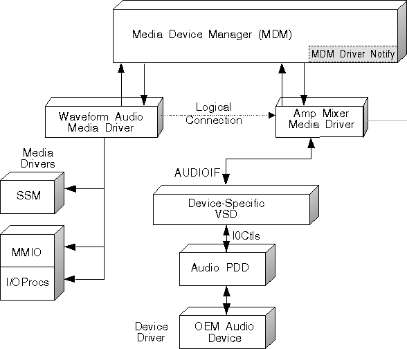

To play back a waveform file stored on a user's hard disk, the Duet Player I sample program sends command messages to the Media Device Manager (MDM) by means of the mciSendCommand function. The application is shielded from having to know specific information about the hardware. In other words, the application does not need to know which audio adapter is being used to play back the waveform file. The MDM sends the commands to a generic mciDriverEntry interface for audio devices, located in the AUDIOMCD DLL. The device-independent AUDIOMCD and its device-specific counterpart AUDIOIF are two of the modules that comprise the waveform audio MCD as shown in the following figure. Also depicted are the MMIO and SSM interfaces used by the MCD.